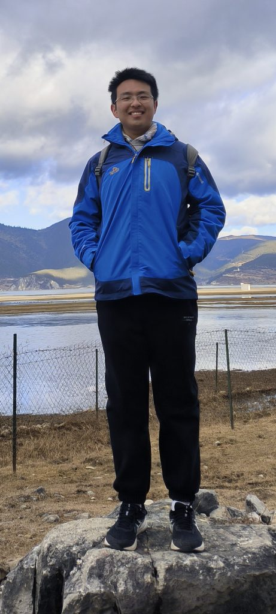

<!DOCTYPE html>
<html>
  <head>
    <title>CV - ZHANG Rushan</title>
    <meta charset="utf-8">
    <meta name="viewport" content="width=device-width, initial-scale=1.0">
    <style>
    .markdown-preview{width:100%;height:100%;box-sizing:border-box}.markdown-preview ul{list-style:disc}.markdown-preview ul ul{list-style:circle}.markdown-preview ul ul ul{list-style:square}.markdown-preview ol{list-style:decimal}.markdown-preview ol ol,.markdown-preview ul ol{list-style-type:lower-roman}.markdown-preview ol ol ol,.markdown-preview ol ul ol,.markdown-preview ul ol ol,.markdown-preview ul ul ol{list-style-type:lower-alpha}.markdown-preview .newpage,.markdown-preview .pagebreak{page-break-before:always}.markdown-preview pre.line-numbers{position:relative;padding-left:3.8em;counter-reset:linenumber}.markdown-preview pre.line-numbers>code{position:relative}.markdown-preview pre.line-numbers .line-numbers-rows{position:absolute;pointer-events:none;top:1em;font-size:100%;left:0;width:3em;letter-spacing:-1px;border-right:1px solid #999;-webkit-user-select:none;-moz-user-select:none;-ms-user-select:none;user-select:none}.markdown-preview pre.line-numbers .line-numbers-rows>span{pointer-events:none;display:block;counter-increment:linenumber}.markdown-preview pre.line-numbers .line-numbers-rows>span:before{content:counter(linenumber);color:#999;display:block;padding-right:.8em;text-align:right}.markdown-preview .mathjax-exps .MathJax_Display{text-align:center!important}.markdown-preview:not([data-for=preview]) .code-chunk .code-chunk-btn-group{display:none}.markdown-preview:not([data-for=preview]) .code-chunk .status{display:none}.markdown-preview:not([data-for=preview]) .code-chunk .output-div{margin-bottom:16px}.markdown-preview .md-toc{padding:0}.markdown-preview .md-toc .md-toc-link-wrapper .md-toc-link{display:inline;padding:.25rem 0}.markdown-preview .md-toc .md-toc-link-wrapper .md-toc-link div,.markdown-preview .md-toc .md-toc-link-wrapper .md-toc-link p{display:inline}.markdown-preview .md-toc .md-toc-link-wrapper.highlighted .md-toc-link{font-weight:800}.scrollbar-style::-webkit-scrollbar{width:8px}.scrollbar-style::-webkit-scrollbar-track{border-radius:10px;background-color:transparent}.scrollbar-style::-webkit-scrollbar-thumb{border-radius:5px;background-color:rgba(150,150,150,.66);border:4px solid rgba(150,150,150,.66);background-clip:content-box}html body[for=html-export]:not([data-presentation-mode]){position:relative;width:100%;height:100%;top:0;left:0;margin:0;padding:0;overflow:auto}html body[for=html-export]:not([data-presentation-mode]) .markdown-preview{position:relative;top:0;min-height:100vh}@media screen and (min-width:914px){html body[for=html-export]:not([data-presentation-mode]) .markdown-preview{padding:2em calc(50% - 457px + 2em)}}@media screen and (max-width:914px){html body[for=html-export]:not([data-presentation-mode]) .markdown-preview{padding:2em}}@media screen and (max-width:450px){html body[for=html-export]:not([data-presentation-mode]) .markdown-preview{font-size:14px!important;padding:1em}}@media print{html body[for=html-export]:not([data-presentation-mode]) #sidebar-toc-btn{display:none}}html body[for=html-export]:not([data-presentation-mode]) #sidebar-toc-btn{position:fixed;bottom:8px;left:8px;font-size:28px;cursor:pointer;color:inherit;z-index:99;width:32px;text-align:center;opacity:.4}html body[for=html-export]:not([data-presentation-mode])[html-show-sidebar-toc] #sidebar-toc-btn{opacity:1}html body[for=html-export]:not([data-presentation-mode])[html-show-sidebar-toc] .md-sidebar-toc{position:fixed;top:0;left:0;width:300px;height:100%;padding:32px 0 48px 0;font-size:14px;box-shadow:0 0 4px rgba(150,150,150,.33);box-sizing:border-box;overflow:auto;background-color:inherit}html body[for=html-export]:not([data-presentation-mode])[html-show-sidebar-toc] .md-sidebar-toc::-webkit-scrollbar{width:8px}html body[for=html-export]:not([data-presentation-mode])[html-show-sidebar-toc] .md-sidebar-toc::-webkit-scrollbar-track{border-radius:10px;background-color:transparent}html body[for=html-export]:not([data-presentation-mode])[html-show-sidebar-toc] .md-sidebar-toc::-webkit-scrollbar-thumb{border-radius:5px;background-color:rgba(150,150,150,.66);border:4px solid rgba(150,150,150,.66);background-clip:content-box}html body[for=html-export]:not([data-presentation-mode])[html-show-sidebar-toc] .md-sidebar-toc a{text-decoration:none}html body[for=html-export]:not([data-presentation-mode])[html-show-sidebar-toc] .md-sidebar-toc .md-toc{padding:0 16px}html body[for=html-export]:not([data-presentation-mode])[html-show-sidebar-toc] .md-sidebar-toc .md-toc .md-toc-link-wrapper .md-toc-link{display:inline;padding:.25rem 0}html body[for=html-export]:not([data-presentation-mode])[html-show-sidebar-toc] .md-sidebar-toc .md-toc .md-toc-link-wrapper .md-toc-link div,html body[for=html-export]:not([data-presentation-mode])[html-show-sidebar-toc] .md-sidebar-toc .md-toc .md-toc-link-wrapper .md-toc-link p{display:inline}html body[for=html-export]:not([data-presentation-mode])[html-show-sidebar-toc] .md-sidebar-toc .md-toc .md-toc-link-wrapper.highlighted .md-toc-link{font-weight:800}html body[for=html-export]:not([data-presentation-mode])[html-show-sidebar-toc] .markdown-preview{left:300px;width:calc(100% - 300px);padding:2em calc(50% - 457px - 300px / 2);margin:0;box-sizing:border-box}@media screen and (max-width:1274px){html body[for=html-export]:not([data-presentation-mode])[html-show-sidebar-toc] .markdown-preview{padding:2em}}@media screen and (max-width:450px){html body[for=html-export]:not([data-presentation-mode])[html-show-sidebar-toc] .markdown-preview{width:100%}}html body[for=html-export]:not([data-presentation-mode]):not([html-show-sidebar-toc]) .markdown-preview{left:50%;transform:translateX(-50%)}html body[for=html-export]:not([data-presentation-mode]):not([html-show-sidebar-toc]) .md-sidebar-toc{display:none}pre{font-family:Menlo,Monaco,Consolas,'Courier New',monospace;direction:ltr;text-align:left;white-space:pre;word-spacing:normal;word-break:normal;padding:1em;margin:.5em 0;overflow:auto;line-height:1.5;tab-size:4;hyphens:none;color:#2b3f6a;background-color:#eee9dd!important;border:#ddd3bb;border-radius:3px}pre[class*=language-]{padding:1em}code[class*=language-] .token.cdata,code[class*=language-] .token.comment,code[class*=language-] .token.doctype,code[class*=language-] .token.prolog,pre[class*=language-] .token.cdata,pre[class*=language-] .token.comment,pre[class*=language-] .token.doctype,pre[class*=language-] .token.prolog{color:#9ca3b0;font-style:italic}code[class*=language-] .token.punctuation,pre[class*=language-] .token.punctuation{color:#9ca3b0}code[class*=language-] .namespace,pre[class*=language-] .namespace{opacity:.7}code[class*=language-] .token.constant,pre[class*=language-] .token.constant{color:#c16161}code[class*=language-] .token.boolean,code[class*=language-] .token.function-name,code[class*=language-] .token.number,pre[class*=language-] .token.boolean,pre[class*=language-] .token.function-name,pre[class*=language-] .token.number{color:#c16161}code[class*=language-] .token.tag,pre[class*=language-] .token.tag{color:#ac4343}code[class*=language-] .token.symbol,pre[class*=language-] .token.symbol{color:#8f932b}code[class*=language-] .token.selector,pre[class*=language-] .token.selector{color:#d08e25}code[class*=language-] .token.attr-name,pre[class*=language-] .token.attr-name{color:#d08e25}code[class*=language-] .token.string,pre[class*=language-] .token.string{background-color:rgba(255,204,0,.03);color:rgba(106,68,28,.77)}code[class*=language-] .token.char,pre[class*=language-] .token.char{color:#8f932b}code[class*=language-] .token.url,pre[class*=language-] .token.url{color:#d08e25}code[class*=language-] .token.atrule,code[class*=language-] .token.attr-value,code[class*=language-] .token.keyword,pre[class*=language-] .token.atrule,pre[class*=language-] .token.attr-value,pre[class*=language-] .token.keyword{color:#8f932b}code[class*=language-] .token.function,pre[class*=language-] .token.function{color:#d08e25}code[class*=language-] .token.class-name,pre[class*=language-] .token.class-name{color:#2b3f6a}code[class*=language-] .token.variable,pre[class*=language-] .token.variable{color:#5e78e1}code[class*=language-] .token.important,code[class*=language-] .token.regex,pre[class*=language-] .token.important,pre[class*=language-] .token.regex{color:#379566}code[class*=language-] .token.bold,code[class*=language-] .token.important,pre[class*=language-] .token.bold,pre[class*=language-] .token.important{font-weight:700}code[class*=language-] .token.italic,pre[class*=language-] .token.italic{font-style:italic}code[class*=language-] .token.entity,pre[class*=language-] .token.entity{cursor:help}pre[data-line]{position:relative;padding:1em 0 1em 3em}pre[data-line] .line-highlight-wrapper{position:absolute;top:0;left:0;background-color:transparent;display:block;width:100%}pre[data-line] .line-highlight{position:absolute;left:0;right:0;padding:inherit 0;margin-top:1em;background:hsla(24,20%,50%,.08);background:linear-gradient(to right,hsla(24,20%,50%,.1) 70%,hsla(24,20%,50%,0));pointer-events:none;line-height:inherit;white-space:pre}pre[data-line] .line-highlight:before,pre[data-line] .line-highlight[data-end]:after{content:attr(data-start);position:absolute;top:.4em;left:.6em;min-width:1em;padding:0 .5em;background-color:hsla(24,20%,50%,.4);color:#f4f1ef;font:bold 65%/1.5 sans-serif;text-align:center;vertical-align:.3em;border-radius:999px;text-shadow:none;box-shadow:0 1px #fff}pre[data-line] .line-highlight[data-end]:after{content:attr(data-end);top:auto;bottom:.4em}.emoji{height:.8em}body{font-size:16px;background-color:#f3f2ee;font-family:'PT Serif','Times New Roman',Times;color:#1f0909;line-height:1.5em}body ol,body ul{list-style:none}body blockquote,body q{quotes:none}body blockquote:after,body blockquote:before,body q:after,body q:before{content:'';content:none}body table{border-collapse:collapse;border-spacing:0}body h1,body h2,body h3,body h4,body h5,body h6{font-weight:700}body h1{font-size:1.875em;line-height:1.6em;margin-top:2em}body h2,body h3{font-size:1.3125em;line-height:1.15;margin-top:2.285714em;margin-bottom:1.15em}body h3{font-weight:400}body h4{font-size:1.125em;margin-top:2.67em}body h5,body h6{font-size:1em}body h1{border-bottom:1px solid;margin-bottom:1.875em;padding-bottom:.8125em}body a{text-decoration:none;color:#065588}body a:active,body a:hover{text-decoration:underline}body .md-fences,body blockquote,body p{margin-bottom:1.5em}body h1,body h2,body h3,body h4,body h5,body h6{margin-bottom:1.5em}body blockquote{font-style:italic;border-left:5px solid;margin-left:2em;padding-left:1em}body ol,body ul{margin:0 0 1.5em 1.5em}body ol li{list-style-type:decimal;list-style-position:outside}body ul li{list-style-type:disc;list-style-position:outside}body li>p{margin-top:0;margin-bottom:0}body .md-after,body .md-before,body .md-meta{color:#999}body table{margin-bottom:1.5em;font-size:1em}body tfoot th,body thead th{padding:.25em .25em .25em .4em;text-transform:uppercase}body th{text-align:left}body td{vertical-align:top;padding:.25em .25em .25em .4em}body .md-fences,body code{color:inherit;background-color:#dadada;padding-left:1ch;padding-right:1ch}body pre code{background-color:inherit}body .md-fences{margin-left:2em;margin-bottom:3em}body .md-fences .CodeMirror.CodeMirror-wrap{top:-.8em}body code,body pre,body tt{font-size:.875em;line-height:1.714285em}body h1{line-height:1.3em;font-weight:400;margin-bottom:.5em}body p+ol,body p+ul{margin-top:-1em}body h3+ol,body h3+ul,body h4+ol,body h4+ul,body h5+ol,body h5+ul,body h6+ol,body h6+ul{margin-top:.5em}body li>ol,body li>ul{margin-top:inherit}body h2,body h3{margin-bottom:.75em}body hr{border-top:none;border-right:none;border-bottom:1px solid;border-left:none}body h1{border-color:#c5c5c5}body blockquote{border-color:#bababa;color:#656565;background-color:#e6e4dc}body thead.md-table-edit{background-color:transparent}body thead{background-color:#dadada}body tr:nth-child(even){background:#e8e7e7}body hr{border-color:#c5c5c5}body .task-list{padding-left:1rem}body .task-list-item{list-style-type:none;margin-left:-1.8em}body .task-list-item .task-list-item-checkbox{margin-right:.8em}body .task-list-item input:before{content:'\221A';display:inline-block;width:1.25rem;height:1.5rem;vertical-align:middle;text-align:center;color:#ddd;background-color:#f3f2ee}body .task-list-item input:checked:before,body .task-list-item input[checked]:before{color:inherit}body img{max-width:100%}body kbd{color:#1f0909}
    /* Please visit the URL below for more information: */
/*   https://shd101wyy.github.io/markdown-preview-enhanced/#/customize-css */

    </style>
    
    <!-- The content below will be included at the end of the <head> element. --><html><head><script type="text/javascript">
  document.addEventListener("DOMContentLoaded", function () {
    // your code here
  });
</script></head><body></body></html>
  </head>
  <body for="html-export">
    <div class="crossnote markdown-preview">
    <html><head></head><body><div>
<style>
.divleft{ float:left;}
.divright{ float:right;}
</style>
<div class="divleft" style="text-align: left;">
<h1 ebook-toc-level-1="" heading="ZHANG Rushan">ZHANG Rushan</h1>
<a href="mailto:rzhangbq@ust.hk">rzhangbq@ust.hk</a><br>
<a href="mailto:rzhangbq@gmail.com">rzhangbq@gmail.com</a><br>
Homepage: <a href="https://rzhangbq.student.ust.hk/">rzhangbq.student.ust.hk</a><br>
Github: <a href="https://github.com/rzhangbq">rzhangbq</a><br>
</div>
<div class="divleft" style="text-align: left;">
</div>
<br>
<br>
<div class="divright" style="text-align: right;">

</div>
<br>
<br>
<br>
<br>
<br>
<br>
<br>
<h2 id="education" ebook-toc-level-2="" heading="Education ">Education </h2>
<ul>
<li><strong>The Hong Kong University of Science and Technology (HKUST)</strong> — 2020 Fall - Present
<ul>
<li>BEng in Aerospace Engineering and BSc in Computer Science</li>
<li>Top 2% in the class (No. 1 out of 41 students as of 2023 Fall)</li>
<li>CGA 3.979/4.300</li>
<li><strong>Aerospace Engineering</strong>: Thermodynamics [A+]; Fluid Mechanics [A+]; Aerodynamics [A]; Aircraft Performance and Stability [A+]; Computational Fluid Dynamics [A+]</li>
<li><strong>Computer Science</strong>: Programming with C++ [A+]; Object-Oriented Programming and Data Structures [A+]; Software Engineering [A+]; Design and Analysis of Algorithms; Deep Learning in Medical Image Analysis; Machine Learning [A-]</li>
<li><strong>Awards</strong>:
<ul>
<li>HKIE Aviation Scholarship (Nominated) — Fall 2023</li>
<li>School of Engineering Dean’s List — Fall 2020-2021, Spring 2020-2021, Fall 2021-2022, Spring 2021-2022, Spring 2022-2023</li>
<li>HKSAR Government Scholarship Fund – Reaching Out Award — Fall 2022-2023</li>
<li>The BDR Scholarship – Academic Performance — 2022-2023</li>
<li>University’s Scholarship Scheme for Continuing Undergraduate Students — 2021-2022, 2023-2024</li>
</ul>
</li>
</ul>
</li>
<li><strong>The Georgia Institute of Technology (Georgia Tech)</strong> — 2022 Fall
<ul>
<li>Exchange Student</li>
<li>CGA 4.000/4.000</li>
<li><strong>Aerospace Engineering</strong>: Aerothermodynamics [A]; Jet and Rocket Propulsion [A]; Computational Fluid Dynamics [A]</li>
<li><strong>Computer Science</strong>: Computer Vision [A]; Systems and Networks [A]; Introduction to Database Systems [A]</li>
</ul>
</li>
</ul>
<h2 id="publication" ebook-toc-level-2="" heading="Publication ">Publication </h2>
<ul>
<li><strong>DoNet: Deep De-overlapping Network for Microscopy Instance Segmentation</strong>
<ul>
<li>Hao Jiang*, <strong>Rushan Zhang</strong>*, Yanning Zhou, Yumeng Wang, Hao Chen</li>
<li>Co-first author</li>
<li>Proceedings of the IEEE/CVF Conference on Computer Vision and Pattern Recognition (CVPR) 2023</li>
<li>Paper available <a href="https://openaccess.thecvf.com/content/CVPR2023/papers/Jiang_DoNet_Deep_De-Overlapping_Network_for_Cytology_Instance_Segmentation_CVPR_2023_paper">here</a>, codes available <a href="https://github.com/DeepDoNet/DoNet">here</a></li>
</ul>
</li>
</ul>
<h2 id="experience" ebook-toc-level-2="" heading="Experience ">Experience </h2>
<ul>
<li><strong>Iterative surrogate model optimization for transient fluid structure interaction</strong> (Summer research, <a href="https://srl.ethz.ch/the-group/prof-robert-katzschmann.html">Prof. Dr. Robert Katzschmann@ETH Zurich</a>) — 2023 Summer - Present
<ul>
<li>Designing, implementing and evaluating surrogate models for fluid structure interaction, conducting optimization with the resultant surrogate models</li>
<li><strong>Inspiration</strong>:
<ul>
<li>Modeling transient fluid flow as a Markov process to enable single-step prediction of flow evolution</li>
<li>Introducing shape representation from the field of computer vision to enable monolithic modeling of fluid-structure interaction</li>
<li>Introducing active learning techniques to reduce the number of samples required for optimization</li>
</ul>
</li>
<li><strong>Role</strong>: Project leader</li>
<li>Aiming for publication at ICML 2024 as the first author</li>
</ul>
</li>
<li><strong>Deep learning for medical image analysis</strong> (Undergraduate research, <a href="https://seng.hkust.edu.hk/about/people/faculty/hao-chen">Prof. Chen Hao@HKUST</a>) — 2022 Spring - Present
<ul>
<li>Designing, implementing and evaluating a novel de-overlapping strategy for semi-transparent cervical cell segmentation</li>
<li><strong>Inspiration</strong>:
<ul>
<li>Using extra information from the overlapping area and the non-overlapping area to guide the segmentation of the whole cell</li>
</ul>
</li>
<li><strong>Role</strong>: Co-first author</li>
<li><strong>Publication</strong>: CVPR2023: <a href="https://openaccess.thecvf.com/content/CVPR2023/papers/Jiang_DoNet_Deep_De-Overlapping_Network_for_Cytology_Instance_Segmentation_CVPR_2023_paper">DoNet: Deep De-overlapping Network for Microscopy Instance Segmentation</a></li>
</ul>
</li>
<li><strong>Designing a high-performance airfoil by advanced CFD and machine-learning methods</strong> (Final year design project for aerospace engineering, <a href="https://seng.hkust.edu.hk/about/people/faculty/lin-fu">Prof. Fu Lin@HKUST</a>) — 2023 Fall - Present
<ul>
<li>Designing, implementing and evaluating machine-learning-based methods for airfoil shape optimization, and comparing results with numerical adjoint methods and experimental results</li>
<li><strong>Inspiration</strong>:
<ul>
<li>Machine learning methods excel in identifying coarse global optima, while numerical adjoint methods excel in refining local optima</li>
<li>Combining these two methods could potentially yield improved results</li>
</ul>
</li>
<li><strong>Role</strong>: Project proposer and leader</li>
</ul>
</li>
<li><strong>Adversarial or reinforcement learning-based closed-loop training strategy for PINN-based fluid simulators that generalize</strong> (Final year project for computer science, <a href="https://sites.google.com/view/dyyeung">Prof. Dit-Yan YEUNG@HKUST</a>) &nbsp;— 2023 Fall - Present
<ul>
<li>Designing, implementing and evaluating a closed-loop training strategy for PINN-based fluid simulator with adversarial or reinforcement learning, to achieve enhanced generalizability</li>
<li><strong>Inspiration</strong>:
<ul>
<li>Closed-loop strategy can more efficiently explore the solution space</li>
<li>Training strategies like RL and AL can be used to form a closed-loop process</li>
</ul>
</li>
<li><strong>Role</strong>: Project proposer and leader</li>
</ul>
</li>
</ul>
<h2 id="extracurricular-activities" ebook-toc-level-2="" heading="Extracurricular Activities ">Extracurricular Activities </h2>
<ul>
<li><strong>Aerial robot development team member</strong>, HKUST ENTERPRIZE <a href="https://www.robomaster.com/en-US">Robo Master</a> Team — 2020 Fall - 2022 Spring
<ul>
<li>Collaborating in a team for mechanical design and manufacturing of robots</li>
</ul>
</li>
<li><strong>Student helper</strong>, <a href="https://seng.hkust.edu.hk/about/people/faculty/jinglei-yang">Prof. Yang Jinglei@HKUST</a>&nbsp;— 2021 Summer
<ul>
<li>Collaborating with the back-end group, in charge of the Vue-based front-end programing</li>
<li>Implementing the hazard warning function with pop-up windows</li>
</ul>
</li>
<li><strong>Hackathon</strong>, <a href="https://hackust.agorize.com/en/challenges/hackust-2022">hackUST</a> 2022 — 2022 Spring
<ul>
<li>Collaborating in a team for the development of a webapp called School Application Helper, helping students to manage school application requirements and timelines</li>
<li><a href="https://github.com/hackUST-2022">Github repository</a>; <a href="https://meeting.tencent.com/user-center/shared-record-info?id=54cf130f-0631-466b-a272-259521fc85a5&amp;from=3">Video demo</a></li>
</ul>
</li>
<li><strong>Research assistant</strong>, <a href="https://isom.hkust.edu.hk/faculty-and-staff/directory/imcheung">Prof. Ki Ling CHEUNG@HKUST</a> — 2022 Summer - 2022 Winter
<ul>
<li>MySQL database maintenance and data washing with Dask</li>
<li>Providing technical support for researchers from different technical backgrounds</li>
</ul>
</li>
<li><strong>Peer mentor</strong>, COMP &amp; CPEG Mentor-Mentee Scheme — 2023 Fall
<ul>
<li>Providing mentoring to second-year students admitted to the computer science and engineering department</li>
</ul>
</li>
<li><strong>Exchange buddy</strong>, Exchange&nbsp;Buddy&nbsp;Program — 2023 Spring, 2023 Fall
<ul>
<li>Helping exchange students navigate the HKUST campus</li>
</ul>
</li>
</ul>
<h2 id="skills" ebook-toc-level-2="" heading="Skills ">Skills </h2>
<ul>
<li><strong>C/C++</strong>: C++(intermediate), C(elementary); notes: <a href="#ebook-heading-c-basic-notes">C++ basic notes</a>, <a href="https://rzhangbq.student.ust.hk/C++_OOP_notes.html">C++ OOP notes</a></li>
<li><strong>Python</strong>: PyTorch(master), NumPy(master), TensorFlow(intermediate), Django(intermediate), Pandas(intermediate)</li>
<li><strong>CAD</strong>: SolidWorks(master)</li>
<li><strong>Documentation</strong>: Markdown(master), LaTeX(master)</li>
<li><strong>Webapp Development</strong>: Vue.js(intermediate), React.js(elementary), MySQL(intermediate), Google Firebase(elementary)</li>
<li><strong>Soft Skills</strong>: Collaboration and leadership, self-learning, self-motivation, time management</li>
</ul>
</div><div id="ebook-heading-c-basic-notes" ebook-toc-level-1="" heading="C++ basic notes"><div></div></div></body></html>
    </div>
  </body>
</html>
